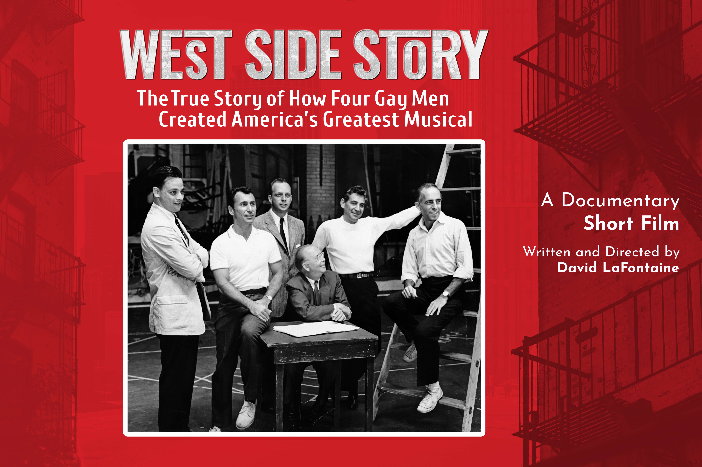

Of the course of the summer of 2024, I worked on a freelance project for an independent documentary short written and directed by David LaFontaine. My task was to create a poster that would serve as an advertisement to garner eyes onto the project. The specifics of what I would make changed as I worked with him — As a result of back and forth exchanges, and the research I did by watching the original film and the documentary it inspired. What started as a piece I would illustrate turned into the final poster. The final poster was meant to mirror the design language I saw in the documentary, so it would feel consistent with what it was aimed at advertising. I had certain guidelines to follow, such as the photo I would use and the text the client wanted to include. We both had to make compromises on how we envisioned the poster. Working with a client in this way was a great experience for me, and it made me approach my design process a bit differenty so the client and I both could be happy. The result is something we were both satisfied with in the end, and that is what matters most.